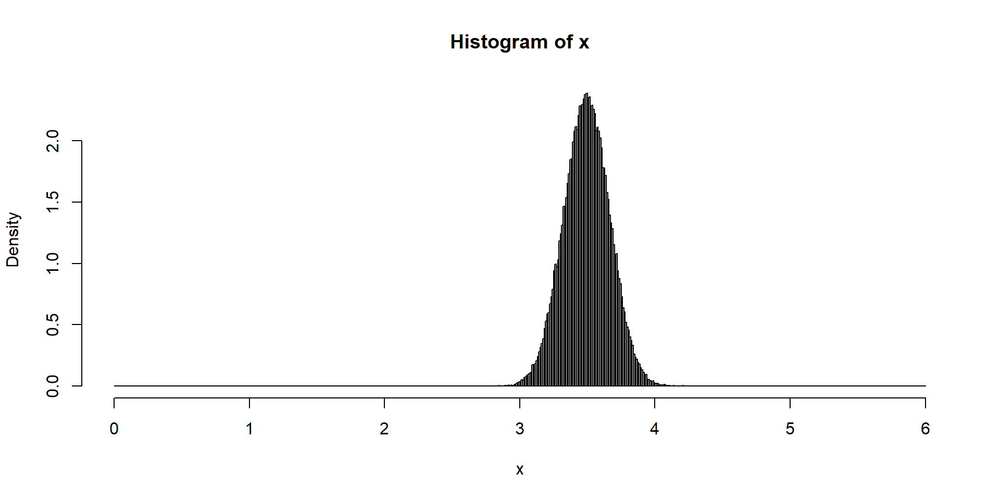
ECON 2B03, Winter 2026
Part B | Lecture 9
Chris Muris, McMaster University
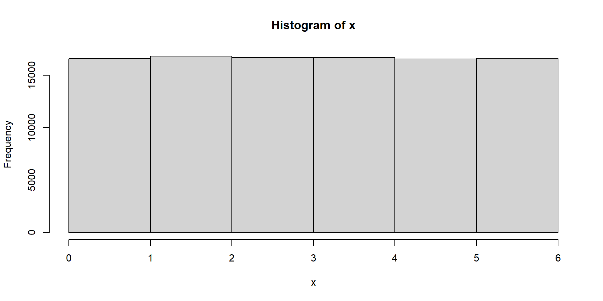
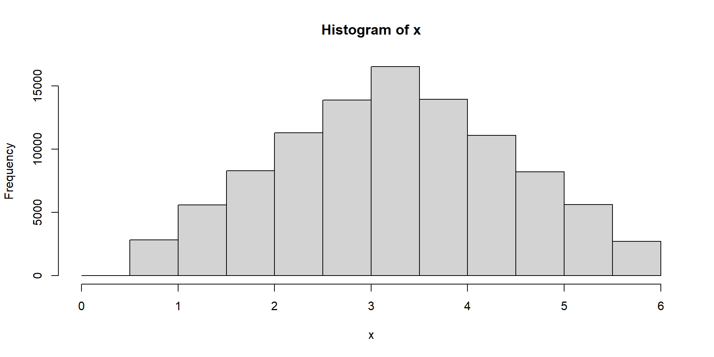
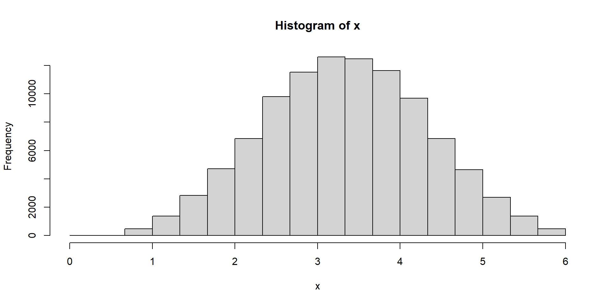
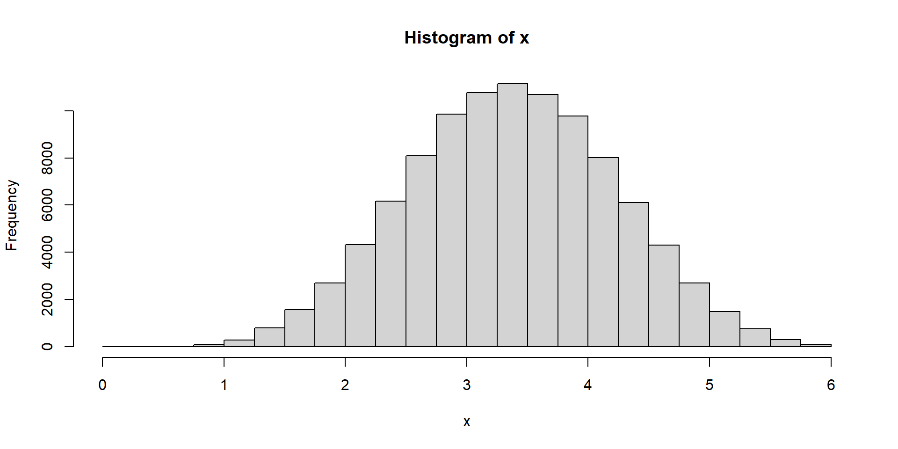
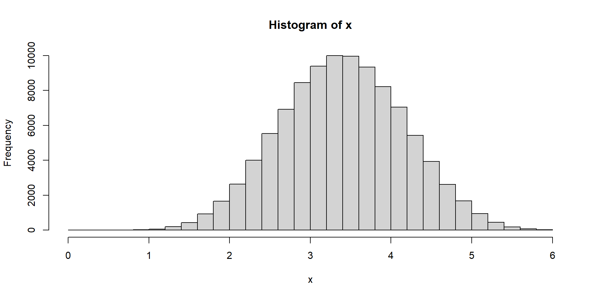
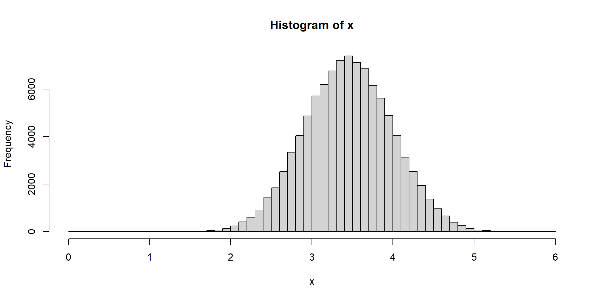
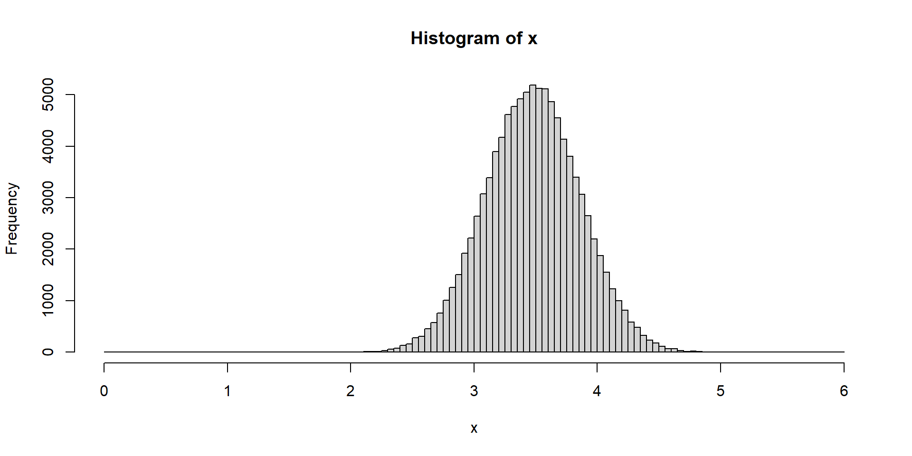
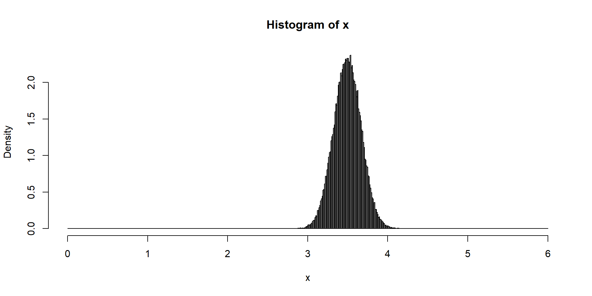

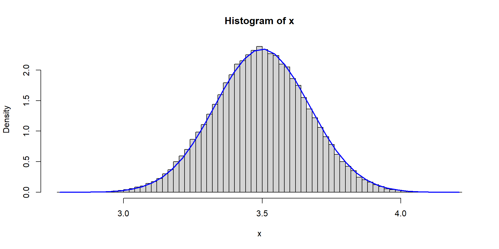
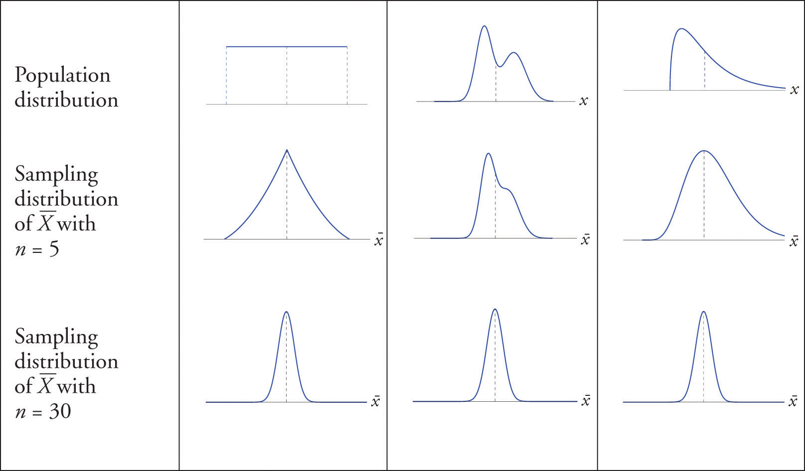
Weekly food expenditures (CLT example)
pnorm: \(0.7967-0.2033=0.5934\)Household credit card debt
Binomial random variables in practice
Estimating the Trudeau vote share with a poll of 100
Polling example: binomial vs normal approximation
R:Exercise: CLT condition for \(\widehat P\)
A population has \(p=0.08\) and a sample size \(n=50\).
Exercise: Approximate a proportion
A poll has \(n=400\) and observed \(\widehat P=0.62\). Assume the true \(p=0.60\).
Exercise: Pollster CLT
In the pollster example, \(p=0.55\) and \(n=100\).
[1] 0.8425607[1] 0.9992591Exercise: Sample proportion mean and sd (SZ 6.3, 3)
The population proportion is \(p = 0.76\). Consider random samples of size 1,200.
Exercise: Cholesterol and the CLT (SZ 6.2, 15)
The mean cholesterol in large eggs is 186 mg with sd 7 mg. A sample of 144 eggs is taken.
Exercise: Defective light bulbs
A factory produces light bulbs with a 4% defect rate (\(p = 0.04\)). A shipment contains \(n = 400\) bulbs.
These slides started from J. S. Racine’s slides for ECON2B03 at McMaster University.
Readings are from
References
These slides are modified from Jeffrey S. Racine’s slides for ECON2B03 at McMaster University.